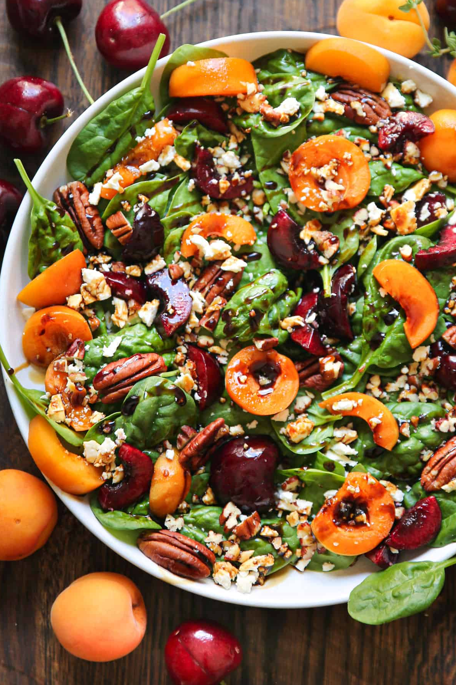

Apricot Salad with Spinach, Cherries, Pecans, and Feta Cheese
A fresh summer salad with spinach, apricots, cherries, pecans, and feta, topped with balsamic glaze. It is meatless, gluten-free, and rich in fiber and antioxidants. Because this salad includes spinach, pecans, and a sweetened glaze, it is best used as an occasional seasonal option and tested in your personal glucose workflow.
Net carbs: ~35g/serving
Saturated fat: ~3g/serving
Higher fruit sugar load than baseline salads. Consider portioning and test response when used.
APOE4
Celiac / GF
DP / Blood Sugar
Fatty Liver
MTHFR
🥗 Ingredients & Method
Ingredients
- Balsamic Dressing / Glaze
- 1 cupbalsamic vinegarLow ox
- 1/4 cuphoney or brown sugarLow ox
- Salad
- 5 ozfresh baby spinachHigh ox
- 2 cupsapricots, cored and slicedModerate ox
- 2 cupsfresh cherries, cored and halvedModerate ox
- 4 ozfeta cheese, crumbledLow ox
- 1/2 cuppecansHigh ox
Instructions
-
1
Make balsamic glazeIn a small saucepan, heat balsamic vinegar and honey over medium heat. Bring to a gentle boil, reduce to a simmer, and cook while stirring until reduced by about half (about 10 minutes).
-
2
CoolRemove from heat and pour into a heat-safe bowl. Let cool until the glaze thickens enough to coat the back of a spoon.
-
3
Assemble saladArrange spinach in individual bowls (or one large serving bowl). Top with sliced apricots, halved cherries, pecans (some whole, some chopped), and crumbled feta.
-
4
Dress and serveDrizzle balsamic glaze over each serving. If using one large bowl, add glaze and toss gently to combine just before serving.
Nutrition Snapshot (per serving)
- Calories: 247
- Fat: 10g (Saturated fat: 3g)
- Carbohydrates: 35g (Fiber: 3g, Sugar: 29g)
- Protein: 6g
- Sodium: 245mg, Potassium: 468mg
- Calcium: 147mg, Iron: 2mg, Vitamin C: 15mg
Protocol Notes
- Source recipe inspiration: Julia's Album — Apricot Salad.
- This recipe is gluten-free and meatless.
- Spinach and pecans increase oxalate load versus your low-oxalate baseline recipes.
- Fruit and glaze raise sugar load, so this is a better fit for occasional use and food-response testing.
- If you want a lower-oxalate variation, substitute kale for spinach and reduce pecan quantity.